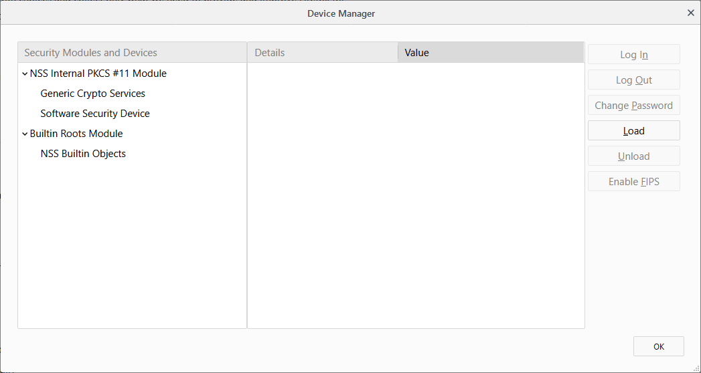
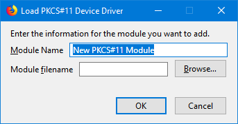

The pkcs11 API enables an extension to enumerate PKCS #11 security modules and to make them accessible to the browser as sources of keys and certificates.
To use this API you need to have the "pkcs11" permission.
Perform the following steps:
Save the PKCS #11 module to a permanent location on your local computer
Select Tools > Options or select the Firefox menu and then Options
Once the Options page opens, select Privacy & Security
Scroll down to the bottom of the page and under Certificates click or tap on Security Devices...

Click or tap the Load button

Enter a name for the security module, such as "My Client Database"
Be careful about using international characters as there is currently a bug in Firefox where international characters may cause problems.
Choose Browse... to find the location of the PKCS #11 module on your local computer, and then click or tap OK to confirm.
Note: Starting with Firefox 58, extensions can use the pkcs11 API to enumerate PKCS #11 modules and make them accessible to the browser as sources of keys and certificates.
There are two environmental prerequisites for using this API:
PKCS #11 modules must be installed on the user's computerPKCS #11 module, there must be a native manifest file that enables the browser to locate the module.Most probably, the user or device administrator would install the PKCS #11 module, and its installer would install the native manifest file at the same time.
However, the module and manifest can't be installed as part of the extension's own installation process.
For details about the manifest file's contents and location, see Native manifests.
{{Compat("webextensions.api.pkcs11", 1, 1)}} {{WebExtExamples("h2")}}